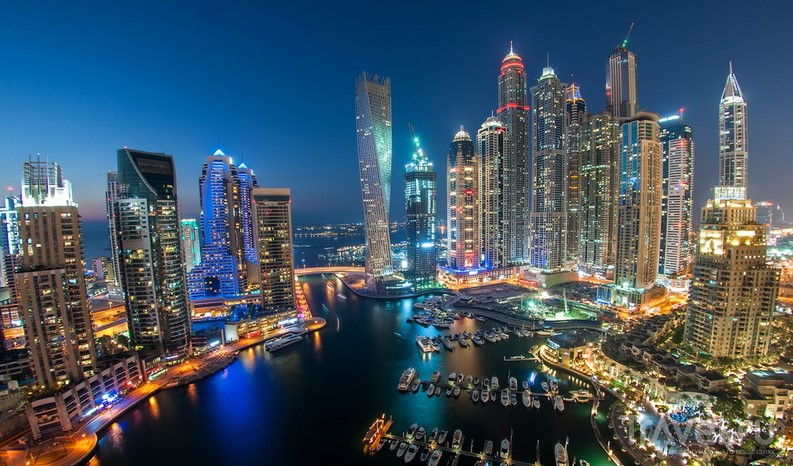

8 серпня 2002 року в м. Київ
Школа "Європейський колегіум" м.Київ 2008-2019
НТУУ "КПІ ім. Ігоря Сікорського" 2019 - 2023
Дуба́й — найбільше за площею і кількістю населення місто Об'єднаних Арабських Еміратів (ОАЕ), адміністративний центр однойменного емірату, що разом з іншими шістьма утворює країну. Населення становить 3 164 966 осіб (станом на 25 листопада 2018). Місто, розташоване на узбережжі Перської затоки, є великим фінансовим і торговельним центром на Близькому Сході. У місті знаходяться найбільший торговельний порт та аеропорт ОАЕ. 2 грудня 1971 року місто Дубай, як столиця однойменного емірату, увійшло до складу новоствореної федеративної держави Об'єднані Арабські Емірати.

Більше про Дубай